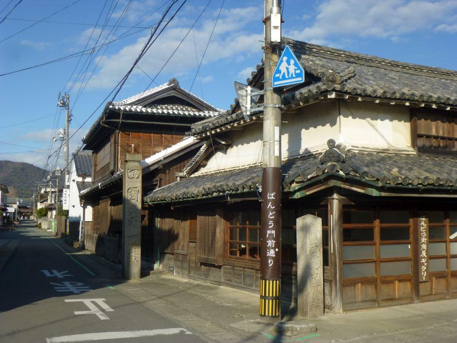

四国八十八ヶ所の第一歩となるローカル駅 < 板東駅 / 徳島県鳴門市 >
徳島県が全国唯一となっている存在の一つに、
「歴史上 電車が一度も走った事がない」
ことが挙げられます。
鉄道は走っていますが その動力源に、昔は蒸気機関。現在はディーゼルエンジン。いずれにしろ走っているのは "キシャ" (＝気動車)です。
日本国内では 沖縄県も長らく電車が走っていない県でしたが、平成15年(2003)に沖縄都市モノレール(通称 ゆいレール)が開通したため、以降 現在に至るまで徳島県だけが電車が走ったことがない県となっています。
一般的に気動車は 動力性能で電車には劣るものの、上空を遮る架線が存在しないので 列車を眺める時に空が広く感じられるメリットがあります。
歴史を感じさせる凝った造りの駅舎
板東駅(ばんどうえき / 徳島県鳴門市)
高松と徳島を結ぶJR高徳線の途中駅。
板東駅は阿波國一宮・大麻比古神社(おおあさひこじんじゃ)の最寄り駅であり、四国八十八ヶ所第一番・霊山寺(りょうぜんじ)の最寄り駅。
これから四国八十八ヶ所まいりを始める初々しいお遍路さんが、この駅で下車する姿が見られます。
駅舎は白壁に板が張り巡らされ、屋根に箱棟が乗せられた 凝った造り。板東の街並みや 名所、歴史に因んだものなのでしょうか。
残念ながら無人駅です。
ここから少し街歩きをしてみることにします。
かつての阿波五街道の一つ、ばんどう門前通り
板東郵便局
住宅街にある普通の郵便局ですが、板東という歴史を秘めた市街地にあると 旅情を感じることができます。

板東は 「昭和が感じられる街並み」 と紹介されることがありますが、そのような建物が密集しているのは 霊山寺へ続く交差点周辺のみ。
東西へ続くこの道は "撫養街道" の一部。「むやかいどう」と読みます。
藩政時代に整備された阿波五街道の一つで、撫養(鳴門)で淡路や畿内からの旅人を迎え、吉野川北岸を通りながら 西部の中心地・池田を結んでいました。
阿波五街道...
讃岐街道、伊予街道、土佐街道、撫養街道、淡路街道
起点は徳島城鷺の門
四国遍路、始まりの第一歩
昭和三戌辰 三月吉日
現住 知全代
時の霊山寺住職の呼びかけで建てられたことが記されています。
同年同月の出来事として、3月16日にキリンレモンが発売されました。
右側・左側の石柱を合わせて
四國第一番霊場霊山寺
ここから数百メートル北へ進むと、霊山寺。道の突き当りにお寺の山門が見えています。
1200年続く四国遍路の第一歩は、この先から始まります。
板東駅
< 自家用車 >
高松駅から 約1時間、58km
徳島阿波おどり空港から 約25分、13km
< 列車 >
高松駅から 約1時間10分
徳島駅から 約30分
※ 主な地点からの最速・最短距離